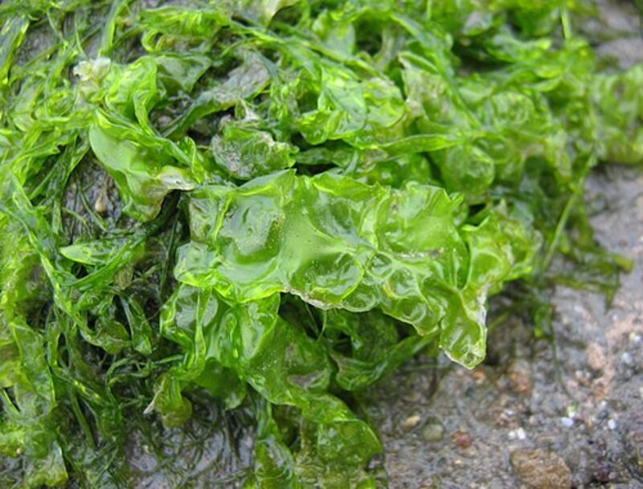

Водоросли (лат. Algae) — гетерогенная экологическая группа преимущественно фотоавтотрофных одноклеточных, колониальных или многоклеточных организмов, обитающих, как правило, в водной среде, в систематическом отношении представляющая собой совокупность многих отделов. Вступая в симбиоз с грибами, водоросли в ходе эволюции образовали совершенно новые организмы — лишайники. Наука о водорослях называется альгологией, её изучение является одним из самых важных этапов при подготовке специалистов в области марикультуры, рыбоводства и морской экологии.
Водоросли — группа организмов различного происхождения, объединённых следующими признаками: фотоавтотрофное питание, отсутствие настоящих тканей (за исключением высокоорганизованных бурых водорослей, но и у них ткани малочисленны и слабо дифференцированы) и вегетативных органов, органы полового (гаметангии) и бесполого (спорангии) размножения, одноклеточные, обитание в водной среде или во влажных условиях (в почве, сырых местах и т. п.). Тело водорослей называется таллом, или слоевище. Причина, по которой водоросли не имеют выраженных тканей, связана с особенностями водной среды обитания — жизнь в воде предполагает сравнительно стабильные условия для большинства клеток, образующих тело организма. Все они почти одинаково освещены; вода, окружающая растение, предоставляет всем его частям одинаковый набор растворённых в ней веществ. Кроме того, вода обеспечивает температурный режим, сходный для всех клеток. В результате клетки водорослей не имеют между собой особых различий, а равные для всех условия отнюдь не стимулируют дифференцировку клеток в специализированные. Некоторые водоросли способны к гетеротрофии, как осмотрофной (поверхностью клетки), например жгутиконосцы, так и голозойной — путём заглатывания пищевых частиц через клеточный рот (эвгленовые, динофитовые). Размеры водорослей колеблются от долей микрометра (кокколитофориды и некоторые диатомеи) до 30-50 м (бурые водоросли — ламинария, макроцистис, саргассум). Таллом бывает как одноклеточным, так и многоклеточным, характеризуется огромным морфологическим разнообразием. Среди многоклеточных водорослей наряду с крупными, сложнорасчленёнными представителями, нередко визуально очень похожими на высшие растения со структурами, внешне напоминающими стебли, листья и даже плоды, есть микроскопические формы (например, спорофит ламинариевых). Среди одноклеточных есть колониальные формы, когда отдельные клетки тесно связаны между собой (соединены через плазмодесмы или погружены в общую слизь). К водорослям относят различное число (в зависимости от классификации) отделов эукариот, многие из которых не связаны общим происхождением. Также к водорослям часто относят синезелёные водоросли, являющиеся прокариотами. Традиционно водоросли причисляются к растениям.